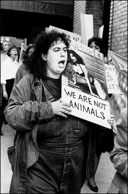
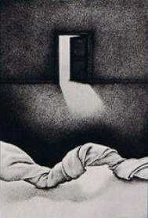

<!DOCTYPE html>
<html lang="fr">
<head>
    <link rel='stylesheet' href='src/css/style.css'>
    <meta charset="UTF-8">
    <meta http-equiv="X-UA-Compatible" content="IE=edge">
    <meta name="viewport" content="width=device-width, initial-scale=1.0">
    <title>Equalshare - Pornographie et féminisme : le combat d’Andrea Dworkin</title>
</head>
<body>
    <header> 
            <a href="index.html"></a>
            <a href="-"></a>
            <a href="/"></a>
    </header>

    <main>
        <section>
            
            <h1>Pornographie et féminisme : le combat d’Andrea Dworkin</h1>
            <p>Temps de lecture : environ 4 minutes.</p>
            <p>Andrea Dworkin, essayiste américaine, est une grande figure dans le féminisme radical. Née en 1946 et décédée en 2005, elle marqua les esprits grâce à ses œuvres et ses interventions politiques. </p>
            <p>C’est une féministe actuelle malgré le fait qu’elle soit décédée : nous allons découvrir pourquoi.</p>
        </section>


        <section>
            <h2>La pornographie : pourquoi est-ce la cible principale de Dworkin ?
            </h2>
            <p>Très tôt, Andrea est impliquée dans la lutte féministe. Son père, instituteur socialiste, lui transmis sa passion de la justice sociale. Sa mère espérait que l’avortement et le contrôle des naissances deviennent acceptables par la société. Malgré des différends avec celleci, Andrea s’en inspire. </p>
            <p>Sa vie est paisible durant son enfance mais elle subit des évènements qui la bouleverseront : </p>
            <ul>
                <li>Une agression sexuelle à l’âge de neuf ans,</li>
                <li>Une punition non méritée en classe de sixième pour son ethnie juive,</li>
                <li>Un toucher vaginal très violent lorsqu’elle séjournait en prison (après une manifestation contre la guerre du Viêt Nam),</li>
                <li>Un mariage qui la liera à un homme violent…</li>
            </ul>
            <p>Ces évènements forgeront son militantisme et son adhésion au féminisme radical. Selon elle, la pornographie est la représentation de l’humiliation et des violences faites à l’encontre du sexe féminin. Il faut y mettre un terme, pour l’autrice. </p>
            
            <figure>
                
                <figcaption>
                    <p> <em>Andrea Dworkin en manifestation, tenant une pancarte exprimant “nous ne sommes pas des animaux”.</em></p>
                </figcaption>
            </figure>

            <p>Elle dénonce en outre l’utilisation des lois anti-obscénité qui permettrait, à l’encontre de l’effet recherché, de publier du contenu explicitement violent envers les femmes.</p>
            <p>Sans que cela soit propre à l’essayiste, les militants anti-pornographie pensent également que ces contenus sont sources de divorce, de ruptures. Les contenus seraient aussi la cause de l’augmentation du nombre croissant de séropositifs ces dernières décennies.</p>

            <h2>Comment a-t-elle combattu la pornographie ?
            </h2>
           <p>
            Dworkin dénonce la maltraitance de la femme à l’intérieur de l’industrie pornographique par des ouvrages, des interviews, des manifestations… Nous allons voir quelques exemples.
           </p>
           <p>
            En 1979, elle publie « Pornography : Men Possessing Women », un de ses best-sellers. Cet ouvrage illustre la pensée de l’autrice à propos de la pornographie : industrie de déshumanisation et culture de haine à l’égard des femmes. 
            Elle explique que la violence de la pornographie se traduit au sein de la société, avec l’érotisation des violences sexuelles par les hommes. Cette violence a également lieu dans les productions pornographiques : les employées sont maltraitées et/ou abusées. 
           </p>
           <p>Elle publie d’autres thèses et livres de théories, promouvant le respect des femmes et dénotant la haine envers celles-ci.
            </p>
            <figure>
            
            <figcaption><em>Première de couverture du livre 
                “Pornography : men possessing women” de Andrea Dworkin.</em></figcaption>
            </figure>
            <p>
                Elle participa à de nombreuses manifestations, dont une comptant environs 3 000 femmes à travers le quartier chaud de San Francisco. 
Andrea Dworkin participa à la commission Meese permettant le retrait des magazines pour hommes (comme Penthouse ou Playboy) des petites chaînes de supermarché.
            </p>
            <p>L’écrivaine et la juriste féministe Catharine MacKinnon rédigent ensemble une proposition d'ordonnance qui définit la pornographie comme une forme de discrimination sexuelle. 
                Elle permet aux victimes de viols de poursuivre les productions pornographiques responsables de l’agression. Plusieurs villes adoptent ce texte dans les années 1980, mais il sera ensuite déclaré contraire à la Constitution par diverses cours fédérales.</p>

            <h2>Les autres combats d’Andrea Dworkin
            </h2>
            <p>
                L’autrice a fait face à de nombreux autres problèmes. Dans sa deuxième œuvre la plus connue, « Intercourse », elle ouvre son analyse de la pornographie aux rapports sexuels en général. 
Elle y dénonce le patriarcat et l’androcentrisme, accentués lors de rapports sexuels hétérosexuels. 
            </p>
            <p>
                Elle lutte également contre les nombreuses critiques qui la touchent. Certaines interrogent son combat, la trouvant trop « extrême ». 
Selon elles, Dworkin affirmait que, peu importe la forme, les rapports sexuels sont tous du viol. 
D’autres la qualifiaient de misandre. 
Certaines critiques disent que les travailleuses du sexe auraient plutôt besoin de soutien plus concret que d’être catégorisées comme victimes. Enfin, les féministes pro-sexes se sont opposées aux idées de l’autrice, surtout lors des 
Sex Wars durant les années 70-80. 

            </p>
            <p>
                Andrea Dworkin mena sa dernière bataille à l’hôpital contre des complications de maladies touchant ses jambes et ses artères. Elle décède dans son sommeil en avril 2005. De nombreuses amies et féministes commémoreront son décès. MacKinnon, une de ses plus grandes alliées, lui rendra hommage lors de la 
« Andrea Dworkin Commemorative Conference ». 
Après son décès, son combat sera repris par de nombreuses autres figures, et est ainsi toujours d’actualité.
            </p>
        </section>

    <button></button>


    </main>

    <footer>
    <p> Eliot Gros MMi B1  | <a href="mailto:eliot.gpro@gmail.com">eliot.gpro@gmail.com</a></p>
    <ul>
        <li><a href="https://www.facebook.com/people/Equalshare/100075648574658/">
            Facebook
            <i class="iconFacebook">
        </i></a></li>

        <li><a href="https://www.instagram.com/equalshare_mmi/">
            Instagram
            <i class="iconInstagram">
        </i></a></li>

        <li><a href="https://twitter.com/equalshare_mmi">
            Twitter
            <i class="iconTwitter">
            </i></a></li>

        <li><a href="https://www.linkedin.com/in/eliot-gros-183b37223/">
            Linkedin
                <i class="iconLinkedin">
                </i></a></li>
            
    </ul>
    <p>Projet réalisé dans le cadre d’un exercice pédagogique au département 
        <a href="http://mmimontbeliard.com/">MMi de Montbéliard</a></p>
    </footer>
</body>
</html>
